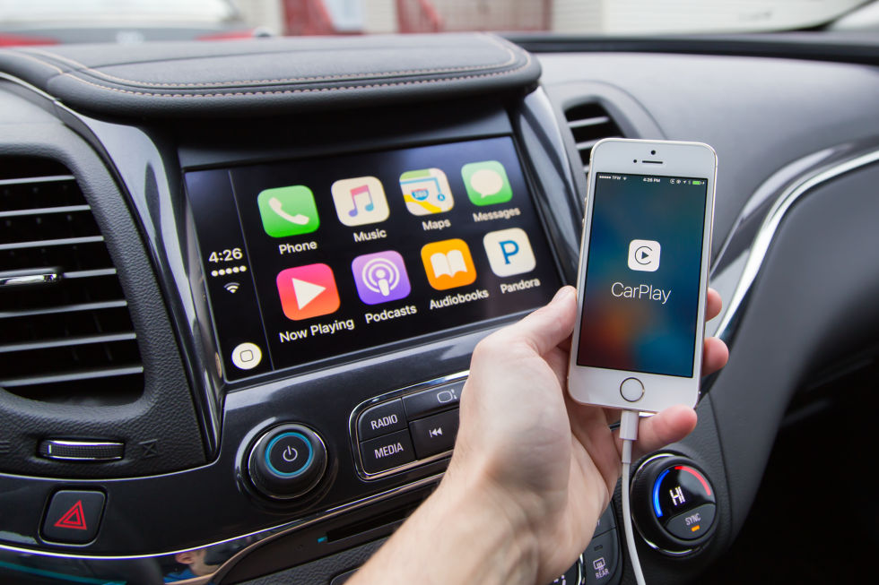

Tu iPhone bloqueará mensajes de texto mientras conduces
Por: Everardo Boyzo C./Cursos Academia
@boyzo1
Muy pronto Apple presentará una nueva función que parará con esa molesta —y peligrosa— urgencia de mirar tus mensajes de texto mientras conduces.
La característica llamada “No molestar mientras manejas” será parte del nuevo sistema operativo de Apple iOS 11, una nueva versión del software para dispositivos móviles de Apple.
Cuando tu teléfono esté conectado a tu vehículo, ya sea vía Bluetooth o por cable, si el auto se está moviendo el teléfono detendrá cualquier notificación de mensajes de texto o actualizaciones. Si alguien te envía un mensaje de texto mientras conduces, el teléfono puede responder con un mensaje automático diciéndole que estás conduciendo y que no puedes responder en ese momento.
La pantalla del iPhone también se bloqueará para evitar que los conductores usen cualquiera de sus aplicaciones mientras conducen. Los pasajeros que van en el auto, pero que no conducen podrán apagar la función.

Mientras conducen, los usuarios aún podrán ver Apple Maps, la aplicación de navegación de Apple, aunque no podrán poner sus destinos. Otras aplicaciones de navegación como Google Maps o Waze también funcionarán, aunque no tan fácilmente.
Los conductores aún podrán usar Apple CarPlay, por supuesto, en autos equipados con este sistema con el que pueden interactuar con sus teléfonos desde la pantalla del vehículo mientras conducen. Esta aplicación les permite a los conductores escuchar y responder mensajes de texto usando comandos de voz y usar otras aplicaciones del iPhone de manera segura mientras se dirigen a sus destinos.
Apple CarPlay está disponible en autos de ciertos fabricantes como General Motors, Fiat, Chrysler, BMW y Honda.
Nissan ha propuesto agregar una aplicación llamada Faraday a sus autos, que sería una caja integrada en el auto que podría bloquear radio transmisiones de cualquier tipo que alcancen el teléfono. Esto podría ser otra forma de prevenir distracciones de mensajes mientras conducen.
Según la Administración Nacional de Seguridad del Tráfico en las Carreteras (NHTSA por sus siglas en inglés) ocho personas mueren cada día en accidentes por manejar distraídas.
Afortunadamente alguien está haciendo algo por nuestra seguridad,bien por Apple!!!